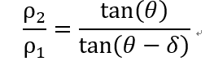
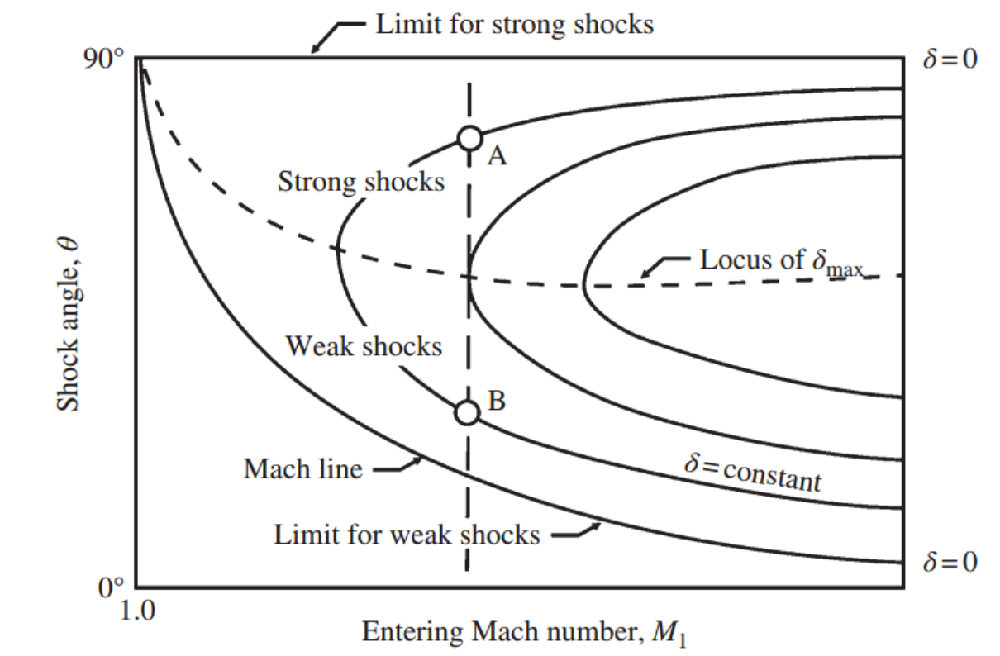
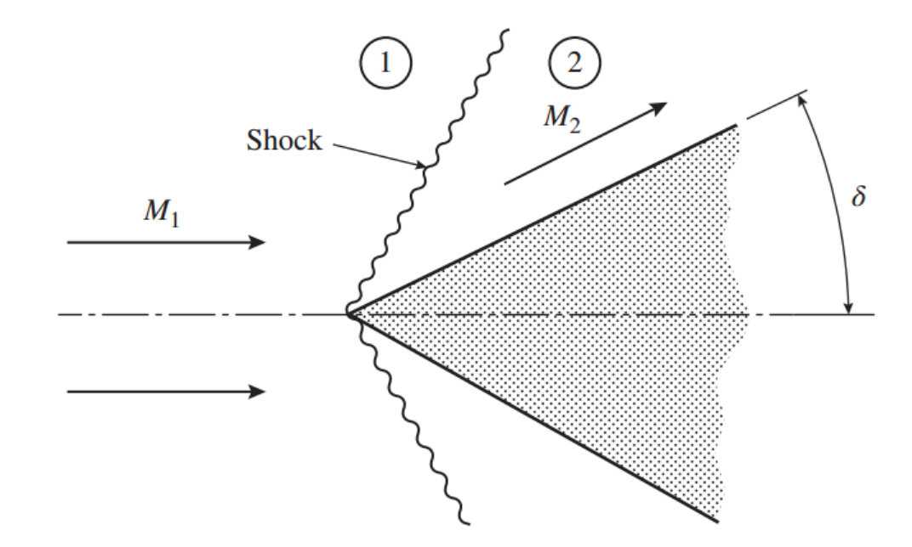

[Gas Dynamics] Ch 7 Moving and Oblique Shocks - part 2
이전 포스팅에서 기울어진 Shock, Oblique shock 에 대해서 탐구해보았다.
Normal shock의 특징은
shock 과정을 State1->State2인 경우
Ma1
을 안다면 Normal shock Table(이미 derived 된 식)
을 통해서
Ma2
를 알 수 있었다.
![[Gas Dynamics] Ch 7 Moving and Oblique Shocks - part 2](./images/img-001.png)
그렇다면 이전 포스터(ch7-part1) 에서 oblique shock 도 결국
M1n -> M2n 인 Normal shock 으로 해석하는데
M1, sin
θ -> M1n -> M2n
M2n, sin(
θ
-
δ)
-> M2 이므로
결국 M1, θ , δ -> M2 로 나타낼 수 있지 않을까??
질문의 해답을 찾으러 가보자.
Continutiy Equation(1n->2n)과 수직성분 V 식
으로
다음과 같이 Density Ratio 를 유도 할 수 있다.
![[Gas Dynamics] Ch 7 Moving and Oblique Shocks - part 2](./images/img-002.png)
Therefore,

+
[ch6 Normal shock 1->2 과정에서 밀도변화는 M1n,r 으로 표현 가능]
![[Gas Dynamics] Ch 7 Moving and Oblique Shocks - part 2](./images/img-004.png)
M1n = M1 sin
θ , 그리고 위 Density Ratio Eq을 대입해주면
![[Gas Dynamics] Ch 7 Moving and Oblique Shocks - part 2](./images/img-005.png)
위식을 Delta 에 관한 식으로 정리하면 최종 Eq derived
![[Gas Dynamics] Ch 7 Moving and Oblique Shocks - part 2](./images/img-006.png)
즉,
θ의 최댓값 90도 일때(Normal shock 인경우) -> δ=0
θ 의 최솟값 sin-1(1/M1) : Mach angle 일때 -> δ=0
위 식에서 δ를 일정하게 변화시키고 M1과 θ 를 Plo t 한 그래프는 다음과 같다.

여기서 우리는 두가지 사실을 주목할 필요가 있다.
1. δmax 존재
M1, θ이 아무리 변하더라도 그래프를 보면 δmax값 이상으로
deflect angle 이 존재하지 않음 을 알 수 있다.
2. Strong & Weak Shock angle
재밌는 사실은 M1,
δ가 일정한 경우 두개의 Shock angle A,B 가 존재 한다는 것.
Shock angle( θ )이 A>B 의 의미는
M1n = M1 sin θ 이므로
M1n이 A>B 이라는 의미
Ch6에서 언급했다 싶이 Inlet Mach number가 클수록
우리는 Strong shock 이라고 불렀다.
Therefore, Shock in the A case is stronger than the B case
자 그렇다면 실제 어떤 경우 Oblique shock 이 생기는 것일까?
Boundary condition of Oblique shock 에 대해서 알아보자
Oblique shock 특징은 "Flow diretion 이 바뀌었다는 것"
따라서,
사진처럼
δ만큼 기울어진 Wedge로 인해서
Flow 1->2 가 Deflect될 경우 Oblique shock 발생

하지만 우리는 Deflection angle 에 Max 값( δmax )이
존재한다는 것을 확인 하였다.
만약에 그림에서 Wedge의 δ> δmax라면??
Oblique shock 생길 수가 없는데 이런 경우는 어떻게?
그런경우 Shock이 Geometry에서 떨어져 형성된다.
![[Gas Dynamics] Ch 7 Moving and Oblique Shocks - part 2](./images/img-009.png)
![[Gas Dynamics] Ch 7 Moving and Oblique Shocks - part 2](./images/img-010.png)
우리는 이러한 Shock을
"Detached Shock"
이라고 칭한다.
위 사진에서 처럼 Detached shock을 지난 Flow는 당연히 Subsonic flow이고
Subsonic의 경우 Shock 이 존재하지 않아도 흐름을 쉽게 그리고
δ > δmax 에서도 flow direction 을 변경할 수 있다.
마지막으로 Converging Diverging Nozzle에서
아직 풀리지 않은 Mystery 가 있다 바로
"2nd critical > P rec > 3rd critical 인경우" 유동은?
![[Gas Dynamics] Ch 7 Moving and Oblique Shocks - part 2](./images/img-011.png)
2nd critical = P rec 인경우
실제 Exit pressure 은 receiver pressure보다 너무 작기 때문에
2nd critical 경우에는 Normal shock 을 이용해서 급격한 압력 증가로
P eixt = P receiver 로 강제로 맞춘 것이다.
그렇다면
2nd critical > P rec > 3rd critical 인경우는
Normal shock은 너무 강력해서 압력을 너무 많이 증가시킨 다는 것이다.
따라서 Normal shock 보다 더 약한 Oblique shock이 발생한다면
압력을 덜 증가 시켜 Prec = P exit 으로 맞출 수 있다.
밑의 사진은 Diverging Nozzle을 symmetric하게 본 시점이다.
![[Gas Dynamics] Ch 7 Moving and Oblique Shocks - part 2](./images/img-012.png)
Symmetric으로 nozzle을 봄으로서 가운데 변을 Solid boundary로 생각 할 수 있다.
(잘이해가 안간다면 이렇게 생각해보자)
Symmetric 하기 때문에 nozzle output 가운데 유체의 흐름은
무조건 오른쪽이어야 한다.
why? 만약에 밑 사진 처럼 수평이 아닌 방향으로 symmetric한 흐름이 만나면
결국 수직방향의 속도는 상쇄되어 오른쪽 방향의 속도만 남게 될 것이다.
따라서 Symmetric 가운데 line을 Solid boundary로 취급 할 수 있다.
(Centerline 근처 flow는 오른쪽으로만 흐른다는 뜻)
![[Gas Dynamics] Ch 7 Moving and Oblique Shocks - part 2](./images/img-013.jpg)
다시 본론으로 돌아가
1 -> 2 과정을
Oblique shock(A)
을 이용하여 P2 = Prec로 맞춰주자
하지만 문제가 하나 생긴다.
바로 oblique shock은 flow direction 을 굴절 시킨다는 것이다.
방금전에 Solid boundary 부근의 유동은 무조건 오른쪽 방향이라고 하였다.
그런데 2번 region 유동의 흐름은 굴절되어 기울어진 방향이라는 것.
따라서, 또다른
Oblique shock(B)
를 이용해서 다시 Flow direction 을 오른쪽으로 바꾸어 주어야 한다.
그렇게 되면 shock이후 압력증가로 P2 < P3이 되어 P3> Prec 이 되어버린다.
궁긍적으로 해결되지 않는 다는 것 ....
2nd critical > P rec > 3rd critical Case
그렇다면 어떻게 도대체 어떻게 해석해야될까?
TBC in CH8